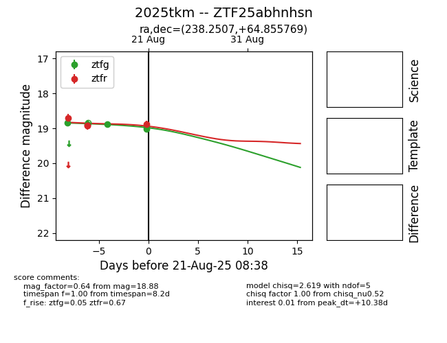

Target 2025tkm at 2025-08-21 11:20, see:
FINK: fink-portal.org/ZTF25abhnhsn
Lasair: lasair-ztf.lsst.ac.uk/objects/ZTF25abhnhsn
ALeRCE: alerce.online/object/ZTF25abhnhsn
TNS: wis-tns.org/object/2025tkm
YSE: ziggy.ucolick.org/yse/transient_detail/2025tkm
alt names
ZTF25abhnhsn (ztf,alerce)
2025tkm (tns,yse)
coordinates:
equatorial (ra, dec) = (238.2507,+64.85577)
galactic (l, b) = (98.6205,+42.71399)
photometry
last ztfg=19.02, ztfr=18.88
5 ztfg, 4 ztfr detections
